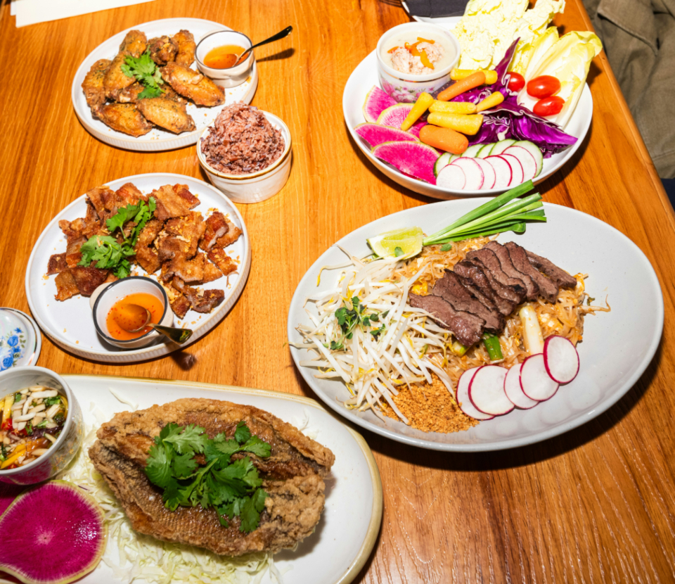

本場の味わい
タイ人オーナーが作る、現地の空気感を感じる一皿。 ハーブやスパイスの香りを活かした料理は、タイ料理が好きな方にも、 これから知りたいという方にも楽しんでいただけます。
千葉県千葉市若葉区西都賀 タイ料理
タイ人オーナーとご家族が営む、家庭的な雰囲気の本格タイ料理店です。
辛さやパクチーの量もご相談いただけます。
タイ・レストラン クワコンムァンは、タイ人オーナーとご家族が切り盛りする、千葉市若葉区西都賀の小さなタイ料理店です。 ハーブとスパイスを効かせた一皿一皿を、気取らない雰囲気の中でお楽しみいただけます。 タイ料理が初めての方も、辛さやパクチーの量を相談しながら、自分に合った一皿を見つけていただけます。
タイ人オーナーが作る、現地の空気感を感じる一皿。 ハーブやスパイスの香りを活かした料理は、タイ料理が好きな方にも、 これから知りたいという方にも楽しんでいただけます。
オーナーとご家族が迎える、笑顔のあるあたたかな接客が魅力です。 辛さやパクチーの量はご相談いただけます(対応可否はメニューによって 異なる場合がありますので、詳しくは店舗にご確認ください)。
気取らない庶民的な雰囲気で、タイ料理が初めての方にも入りやすいお店です。 お求めやすい価格帯で、日常の食事としても気軽にご利用いただけます。
Googleクチコミに寄せられた声を、投稿者情報を伏せて一部ご紹介します。
ご夫婦で来店されたお客様
初めてタイ料理店を訪れたというご夫婦。タイビールやソムタムタイ、 カドゥークムートート、パッタイ、トートマンクンなど、 いろいろな料理を注文されたそうです。辛さは最初驚いたものの、 食べるうちに心地よく感じられ、次回はランチのグリーンカレーを 楽しみにされているとのことです。
本格志向のお客様
庶民的な雰囲気の店内で、タイの方と思われるお客様の姿も見かけ、 現地の味の再現度を評価されていました。ガパオのホーリーバジルの 香りの良さも印象的だったそうです。
タイ料理が初めてだったお客様
パッタイ、カオマンガイ、ガパオライス、ココナッツスープを 注文されたお客様。辛さやパクチーの量を相談しながら注文できた点を 評価されていました。
リピーターのお客様
オーナーとご家族の接客のあたたかさを評価されているお客様。 グリーンカレーとトムカーガイの深みのある味わいを気に入り、 また来店したいとのことです。
ご家族で来店されたお客様
親子で来店されたお客様。店主や他のお客様ともフレンドリーな 雰囲気が印象的だったそうです。現地の味に近く、価格も入りやすいと 評価されていました。
店舗名+住所での地図検索結果を暫定表示しています。正式な地図埋め込みは、位置情報確定後に差し替えます。
PHOTO SAMPLE(フリー素材によるイメージ写真)
